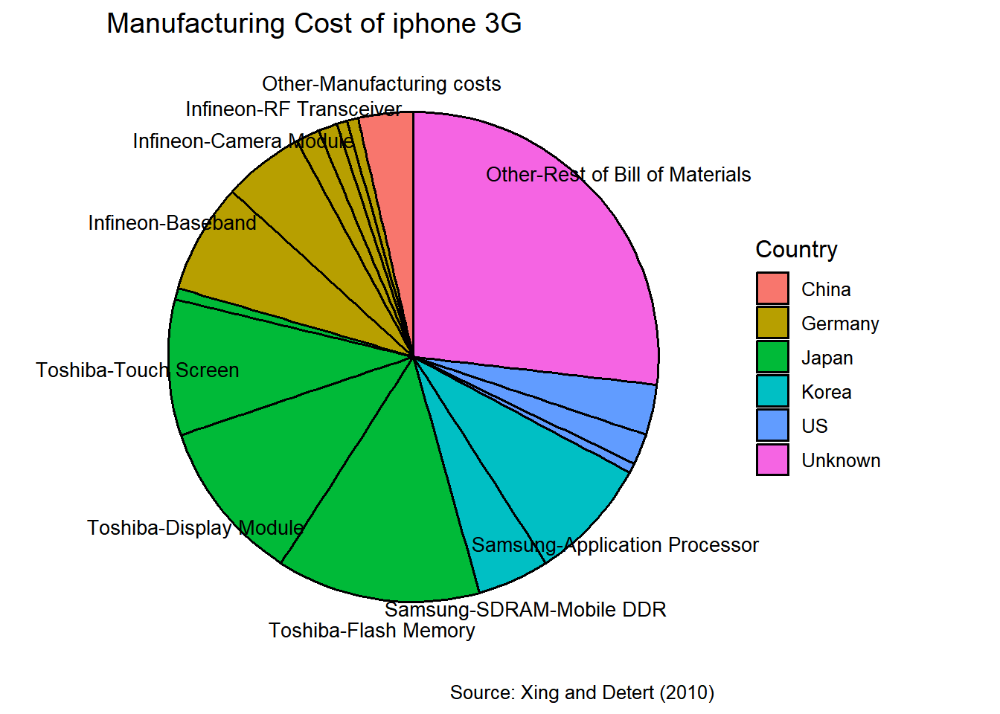
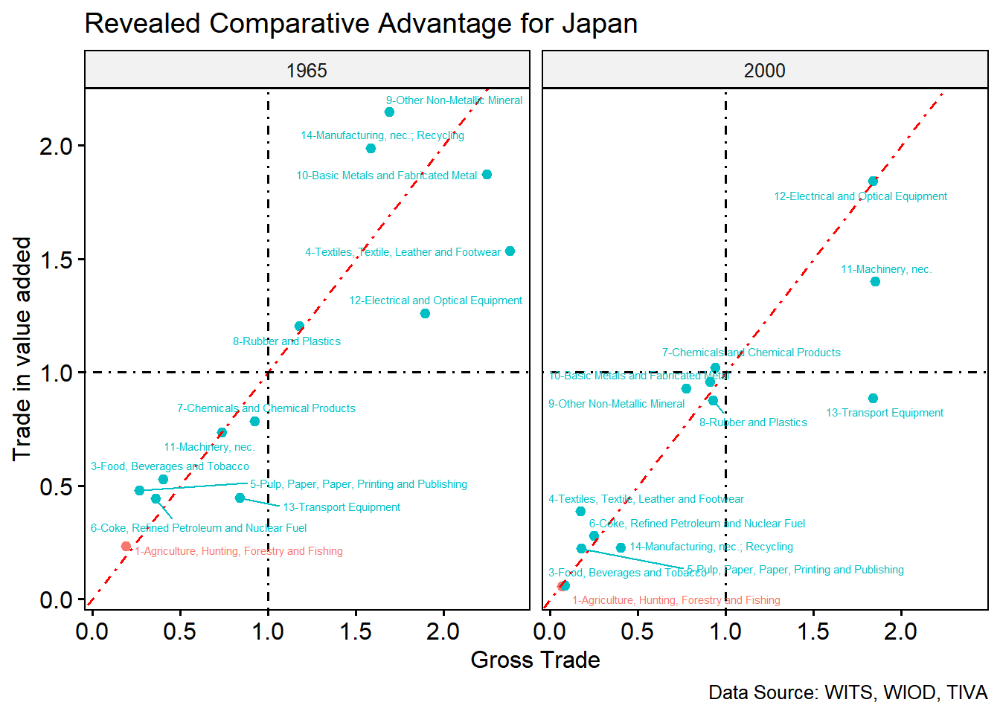
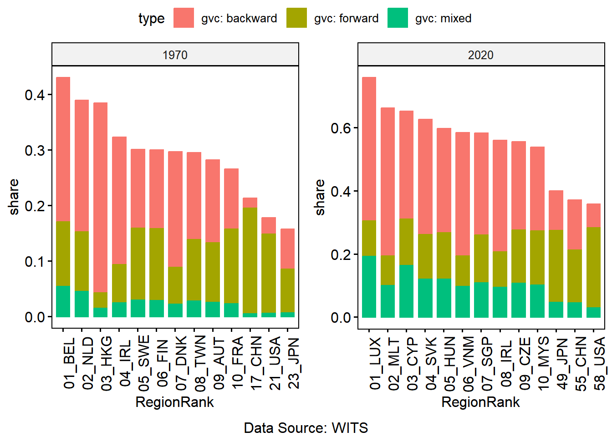
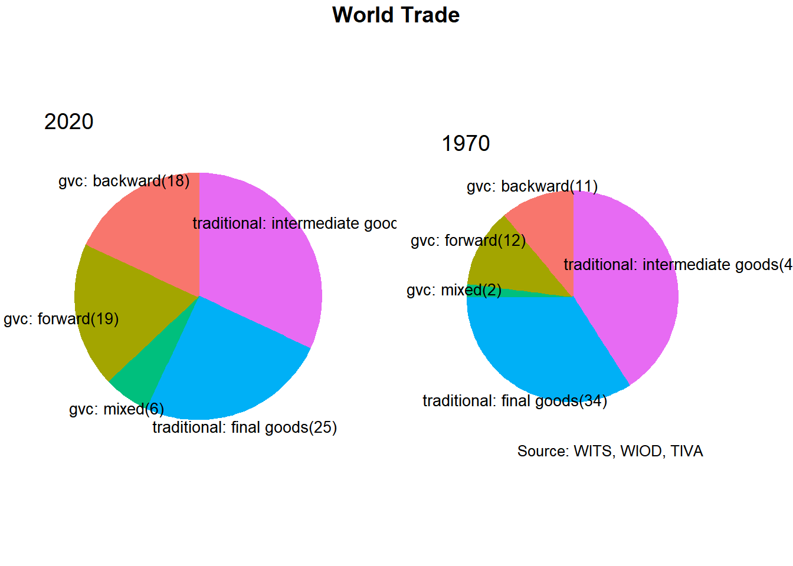
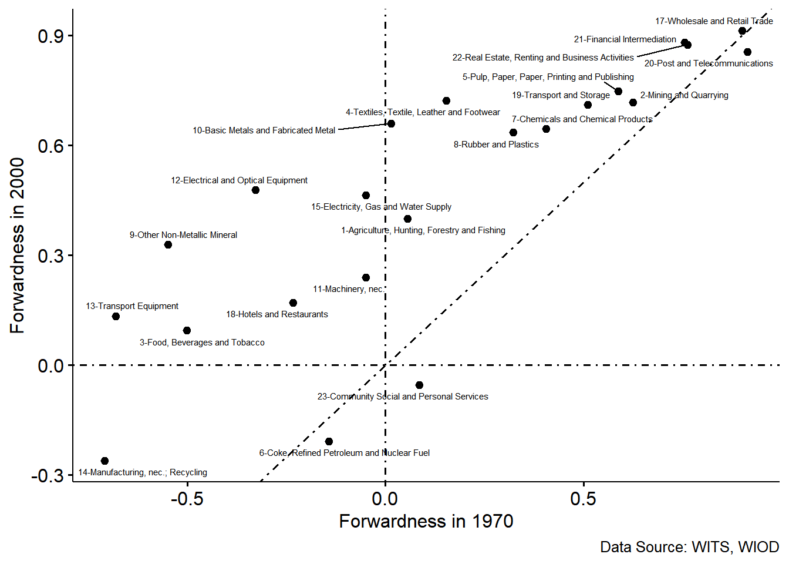
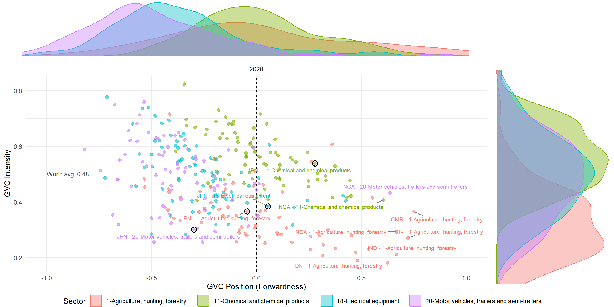
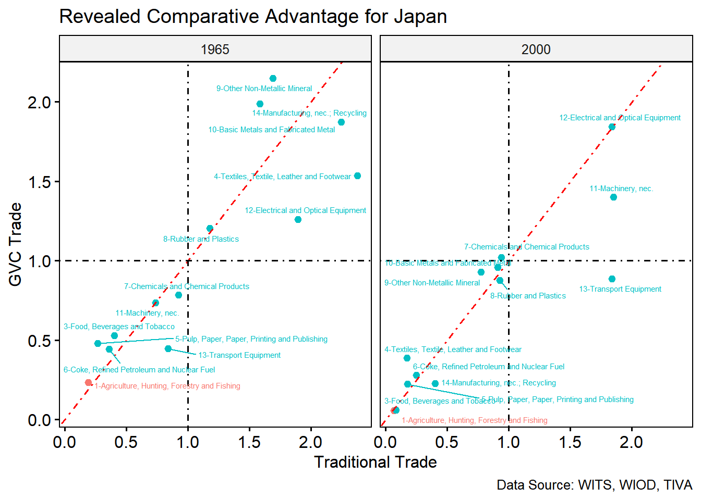
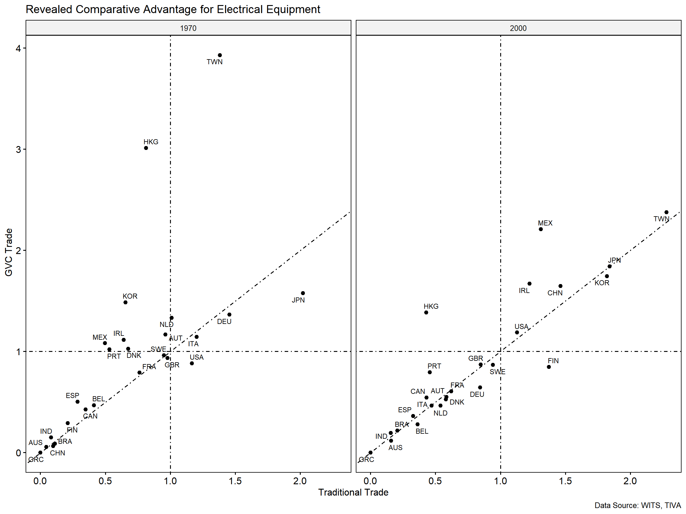

Measurement of Global Value Chains
Introduction
- Trade in tasks
- Trade in value added
- Japanese comparative advantage: revisited
- Case study: Motor Vehicles, Electronics, Chemicals
Trade in Tasks
Traditional trade theory: countries exchange complete, finished goods
Grossman & Rossi-Hansberg (2008): production is unbundled into discrete tasks — design, component sourcing, fabrication, assembly, testing, marketing
Comparative advantage now applies task-by-task, not product-by-product
A task is offshored when it can be performed abroad more cheaply, net of coordination and trade costs
- WTO and JETRO-IDE (2011) reframe East Asian trade as evolving “from trade in goods to trade in tasks”
- Explains the rise of intra-industry, intra-firm trade in intermediate goods
- A country’s export mix reflects which tasks it specializes in, not which whole product it exports
An example
The Smile Curve

- Introduced by Acer founder and CEO Stan Shih in the early 1990s: - the early and late stages of the supply chains generate higher value added
- The share of value added in manufactured products is shifting from the fabrication stages to pre- and post-fabrication services.
- reclassification: from in-house to outsourced -> factory-less manufacturer
- task-composition shifts: more logistics, transportation, communication to move intermediates or more software/design etc final goods
- task–relative price shifts: off-shoring to reduce the relative price of the off-shored tasks.
Trade in Value Added
Gross trade statistics double-count intermediate inputs that cross borders multiple times before reaching the final consumer
The Trade in Value Added (TiVA) approach reallocates exports to the country that actually created the value:
- Domestic Value Added (DVA): value added by the exporting country itself
- Foreign Value Added (FVA): value added by other countries, embodied in imported inputs
- Gross exports overstate bilateral imbalances (e.g., the US–China trade deficit narrows substantially once measured in value-added terms)
- Value-added trade better reflects which country actually benefits from a given trade flow
Simple example
flowchart LR
A["Country A<br/>Component<br/><b>$20 VA</b>"] -->
B["Country B<br/>Adds $30 VA<br/><b>Export = $50</b>"] -->
C["Country C<br/>Adds $50 VA<br/><b>Final product = $100</b>"] -->
D["Final consumer"]
Gross exports recorded
\[ \text{Gross exports} = 20 + 50 + 100 = \$170 \]
Total value added is
\[ 20 + 30 + 50 = \$100 \]
But how do we know that all $20 imported by B is actually used to produce B’s exports?
Input–Output Tables
\[ \boxed{\text{Who supplies inputs to whom?}} \]
flowchart LR
A["Domestic<br/>Industry A"] <--> M["Domestic<br/>Manufacturing"]
I["Imported<br/>inputs"] --> A
I --> M
A --> E["Exports"]
M --> E
A --> D["Domestic<br/>final demand"]
M --> D
MRIO Data Used in WITS GVC Indicators
WITS GVC combines GVC indicators calculated from several global input–output databases:
| Database | Countries | Sector | Period |
|---|---|---|---|
| Eora26 | 189 | 26 | 1990-2015 |
| WIOD 2016 | 43 + RoW | 56 | 2000-2014 |
| Long-run WIOD | 25 | 23 | 1965-2000 |
| OECD TiVA/ICIO | 76 | 45 | 1995-2020 |
| ADB MRIO | 62 | 35 | 2007-2022 |
Global Value Chains
GVCs refer to the fragmentation of production across countries, where different stages of producing a good or service are carried out in different countries.
Snake: Sequential production
flowchart LR
A["Raw<br/>materials"] -->
B["Parts"] -->
C["Processing"] -->
D["Assembly"] -->
E["Final<br/>product"]
Spider: Assembly of components
flowchart TB
A["Part A"] --> E["Assembly"]
B["Part B"] --> E
C["Part C"] --> E
D["Part D"] --> E
E --> F["Final<br/>product"]
Key Features of Global Value Chains
Fragmentation of Production: across multiple countries for cost structures, labor markets, and expertise
Specialization: specific segments of the chain (R&D, design, manufacturing, logistics )
Interconnection: trade, investment, and technology
Value creation: value added chain from materials to final goods
Global distribution: multiple markets
Backward and Forward GVC Linkages
Backward linkage
flowchart LR
F["Foreign<br/>value added"] --> H["FOCAL<br/>COUNTRY"] --> D["Exports"]
The country uses foreign inputs in its exports.
Forward linkage
flowchart LR
H["FOCAL<br/>COUNTRY"] --> F["Foreign<br/>production"] --> D["Exports"]
The country’s value added is used in other countries’ exports.
Measuring GVC Participation
Backward linkage (backward participation)
\[ \text{Backward} = \frac{FVA}{\text{Gross Exports}} \times 100 \] Forward linkage (forward participation)
\[ \text{Forward} = \frac{DVX}{\text{Gross Exports}} \times 100 \] Total GVC participation = Backward + Forward
- Based on the gross export decomposition in Koopman, Wang & Wei (2014), built from international input–output tables
- Small, open economies (e.g., ASEAN members) tend to show higher backward participation. They import more of what they need to export
- Countries positioned at the start of chains (raw materials, core components, R&D) tend to show higher forward participation
- Rule of thumb: Backward ↑ when a country imports a lot of intermediates; Forward ↑ when a country’s intermediates are re-exported by others
But, Where Does This Country Stand?
flowchart LR
A["Country A"] --> B["COUNTRY B"] --> C["Country C"] --> D["Final market"]
Country B:
- imports intermediate inputs from Country A
- adds domestic value
- exports intermediates to Country C
- Country C uses them to produce exports
Question: Is Country B participating through a backward or a forward linkage?
Pure and Mixed GVC Participation
Pure backward: Imports FVA → produces exports
flowchart LR
A["Foreign inputs"] --> B["FOCAL COUNTRY"] --> C["Final exports"]
Pure forward: Exports DVA → used in foreign exports
flowchart LR
A["FOCAL COUNTRY"] --> B["Foreign production"] --> C["Final exports"]
Mixed: Imports FVA and contributes value added to downstream foreign exports
flowchart LR
A["Foreign inputs"] --> B["FOCAL COUNTRY"] --> C["Foreign production"] --> D["Final exports"]
Decompose Gross Trade
- Traditional trade: cross border once
- GVC-related trade: cross border at least twice
- Pure backward participation: the use of foreign inputs in exports to the final destination (chain end)
- Pure forward participation: the use of domestically produced intermediates in third-country exports (chain start)
- Mixed participation: the use of foreign intermediates in third-country exports
GVC intensity and GVC position
- How strongly is a country or industry involved in GVC production?
\[ \text{GVC Participation} = \text{Pure Backward} + \text{Pure Forward} + \text{Mixed} \]
- Where does the country or industry tend to operate in the value chain?
\[ Forwardness = \frac{\text{Pure Forward} - \text{Pure Backward}}{\text{Total GVC Participation}} \]
Summed over all countries, sectors and partners, pure forward activity equals pure backward activity.
At the country-sector level, 0 means pure forward and pure backward are balanced, so the sector is neither mainly at the start nor mainly at the end of chains, relative to the world average. Positive values mean more upstream (supplying inputs), negative values mean more downstream (assembling from imported inputs).
Alternative measures of GVC position include upstreamness (distance of output from final demand) and downstreamness (distance from primary inputs/value added). These measures are conceptually related to, but distinct from, WITS forwardness.
- Upstream (high value): design, R&D, core components, precise machinery
- Midstream: capital goods exports, management of production networks
- Downstream: limited (assembly shifted to China/ASEAN), but could be different for chemicals (pharmaceutical synthesis)
Global GVC-related trade

- Only one fourth trade are GVC-related in 1970
- Over 50% of world trade occurs within GVCs in 2020
- Enables technology transfer and knowledge spillovers.
- Entry point for developing countries into global trade.
- Also increases vulnerability to shocks (pandemic, natural disasters).
Regions with high GVC participation

- Small open economies source more inputs from abroad in GVCs than large countries: more backward participation
Forwardness Distribution

Japan’s GVC-related trade share

- GVC-related trade increase from about 20% in 1970 to 40% in 2020
- Further separation of production chain with assembly move to China in 1990s, and then new ASEAN3
Japan’s sector position

Four sectors globally

Vehicles: Regional GVCs — transport costs, scale economies, regional specialization Electronics: Global GVCs — highly fragmented production across countries Agriculture: Less fragmented — stronger local/regional sourcing Chemicals: Intermediate-input intensive — mainly domestic sourcing, with growing imported contented mostly domestically, but some increasing trend in import content as well
Four quadrants
| Intensity \ Forwardness | Low forwardness | High forwardness |
|---|---|---|
| High intensity | Integrated assemblers. Heavy use of imported inputs and output tied to chains: Motor vehicles and Electrical | Integrated suppliers. Domestic value added is a major input into other countries’ exports: Chemicals |
| Low intensity | Marginal downstream. Little GVC activity, mostly imported inputs in final goods | Marginal upstream. Little GVC activity, mostly supplying primary inputs that others process: Agriculture |
Caveats
- Forwardness excludes two-sided participation, so a value near 0 can mean balanced roles or mostly two-sided activity.
- The world average is zero across all sectors combined, so individual sectors need not average zero.
- Many points lie near the cut-offs, especially intensity around 0.5. Treat the quadrants as a description of each sector’s cloud, not strict classes.
Four sectors in Japan

Japan comparative advantage: revisited

- RCA_Ai = share of export of industry i in country A export/ share of global export of industry in global export (Balassa, 1965)
- effective only within same country among products or same product among countries: higher value indicates a stronger export performance, higher degree of export specialization, and a higher degree of revealed comparative advantage
- CA emphasize relative differences in productivity between countries as the reason for international trade

- the highest degree of RCA variation: primary and unskilled labour-intensive product
- less variation in technology and human capital-intensive product categories
Key takeaways
- GVCs fragment production across countries
- GVC participation can take different forms: pure backward, pure forward, and two-sided (mixed) participation.
- Input–output tables make GVC measurement possible by tracing value added through industries and countries across multiple production stages.
Suggested Readings
- Baldwin, R., & Ito, T. (2021). The smile curve: Evolving sources of value added in manufacturing. Canadian Journal of Economics/Revue Canadienne d’économique, 54(4), 1842–1880.
- Baldwin, R., & Venables, A. J. (2013). Spiders and snakes: Offshoring and agglomeration in the global economy. Journal of International Economics, 90(2), 245–254. https://doi.org/10.1016/j.jinteco.2013.02.005
- Elms, D. K., & Low, P. (2013). Global value chains in a changing world. World trade organization.
- Grossman, G. M., & Rossi-Hansberg, E. (2008). Trading Tasks: A Simple Theory of Offshoring. American Economic Review, 98(5), 1978–1997. https://doi.org/10.1257/aer.98.5.1978
- Koopman, R., Wang, Z., & Wei, S.-J. (2014). Tracing Value-Added and Double Counting in Gross Exports. American Economic Review, 104(2), 459–494. https://doi.org/10.1257/aer.104.2.459
- Kinoshita, T., Kishida, H., & Amemiya, A. (2004). Strategy of Japanese manufacturers in ASEAN and China in light of emerging FTA initiatives.
- OECD. (2011). Globalisation, comparative advantage and the changing dynamics of trade (Online-Ausg). OECD.
- Suvannaphakdy, S., & Pham, T. P. T. (2023). GVC Reconfiguration. ISEAS–Yusof Ishak Institute Singapore.
- Todo, Y., & Inoue, H. (2021). Geographic Diversification of the Supply Chains of Japanese Firms. Asian Economic Policy Review, 16(2), 304–322
- WTO and JETRO-IDE (2011), Trade patterns and global value chains in East Asia: from trade in goods to trade in tasks.
- Xing, Y., and N. Detert (2010). How the iPhone Widens the United States Trade Deficit with the People’s Republic of China. ADBI Working Paper 257. Tokyo: Asian Development Bank.
Data
Mancini, M., & Taglioni, D. (2025). Economic consequences of trade and global value chain integration: A measurement perspective. The World Bank Economic Review, https://doi.org/10.1093/wber/lhaf017.